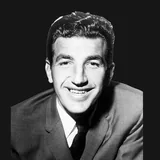

Joe Caldwell
Age
85
born Nov. 1, 1941
NBA seasons
6
1964-65 to 1969-70
Games
468
regular season
All-Star selections
2
Life
- Born
- Nov. 1, 1941, in Texas
- Age
- 85 (as of Nov. 13, 2026)
- Height
- 6'5" (height and lifespan)
- Honors
- 2 NBA All-Star selections
Teams
regular-season games| Detroit Pistons | 1964-65 to 1965-66 | 2 | 99 |
| St. Louis Hawks / Atlanta Hawks | 1965-66 to 1969-70 | 5 | 369 |
Age in context
- No. 60 oldest living former NBA player (list).
- No. 10 oldest living former Hawk (oldest Hawks).
Still with us, born in 1941
Joe Caldwell is one of 7 living NBA players born in 1941.
Born the same year (1941)
Also reached 85

296 players reached 85; the most accomplished are shown.
Also born on November 1
Similar height
Of 72 NBA players within an inch of his height (6'5") born 1936–1946 whose outcome at 85 is known, 23.6% have reached 85. How height and lifespan line up.
Keep exploring
★3 = number of NBA All-Star selections